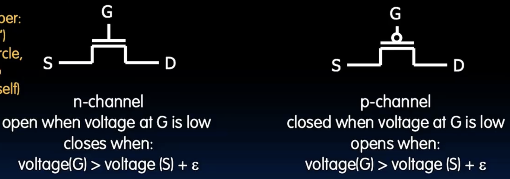
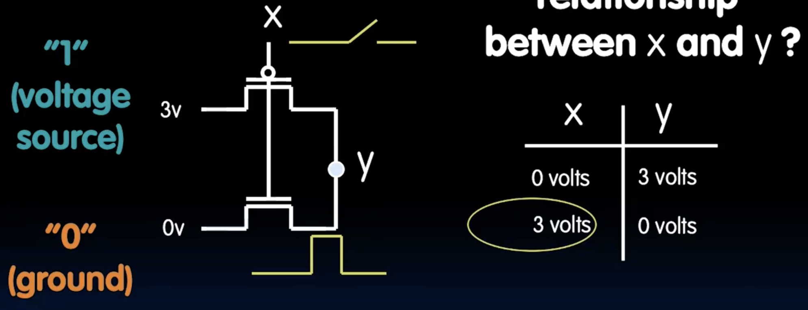
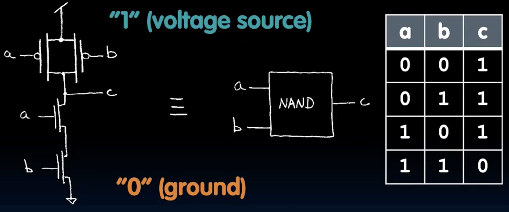
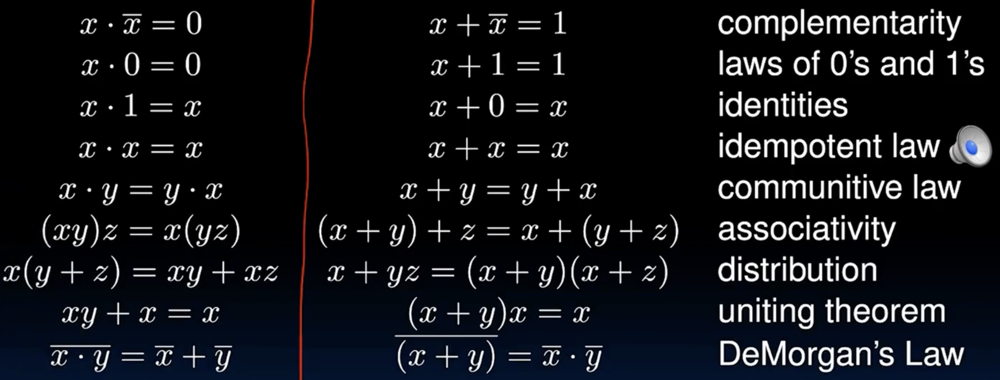

Logic Design
- And , Or
Transistors
MOS Transistor
- n-type MOSFET (NMOS)
- p-type MOSFET (PMOS)
- 有三个端口：gate, source, drain，当gate电压高于source电压时，NMOS导通；当gate电压低于source电压时，PMOS导通。记住：DGS。

|
|

|
|

- 突然发现把1V和0V反过来不就是and了吗，但是ai又说工业上是用NAND + NOT 来实现and的，不懂（
Signals and Waveforms
- notice delay！
- Combinational logic(CL) circuits: output only depends on current input ; similar to a pure function in mathematics, y = f(x). (No way to store information from one invocation to the next. NO side effects.)
- state element: a device that can store information. (e.g., flip-flop, latch, register)
accumulator 累加器
- feedback loop: output feeds back into input
- 一个寄存器是n个flip-flop并行组成的，可以存储n位二进制数。
- 其中涉及到DQ flip-flop，D是data input，Q是output。当时钟上升沿到来时，D的值被锁存到Q中。建立时间、保持时间、Clock-to-Q时间等都是设计时需要考虑的因素。往往我们都希望D的值在建立时间和保持时间保持稳定，希望Q时间越短说明电路越快。
- 这个D触发器在我之前的fpga的博客里有介绍过。
- 超频可能会导致时序问题，即数据在建立时间和保持时间内的一些错误值被锁存到寄存器中，导致电路行动异常。
Pipelining to improve performance
- 对于一个简单的CL循环电路，一次迭代的时间是Clock-to-Q + CL delay + setup time(必须有一段稳定的建立时间)。
- 可以通过流水线来提升性能，比如一个电路中有一个add 和一个shift,直接通过的话会有一个巨大的CL delay; 但是如果我们在中间添加一个寄存器，那么add和shift就可以同时进行，CL delay被分成两部分，性能提升了。（bottleneck被打破了）
- 但是流水线也有一些缺点，比如增加了寄存器的数量，增加了时钟周期的数量，增加了时序问题的风险等。
logic gates
- 我们都知道基本的逻辑门有AND, OR, NOT, NAND, NOR, XOR, XNOR等。
- 对于n个输入的xor门，如何判断输出是0还是1呢？其实很简单，输出为1当且仅当输入中有奇数个1；输出为0当且仅当输入中有偶数个1。
- 例如对于4输入的xor门，输入为0，0，0，0时输出为0；输入为1，0，0，0时输出为1；输入为1，1，0，0时输出为0；输入为1，1，1，0时输出为1；输入为1，1，1，1时输出为0。
bool algebra
- or : A + B = A OR B
- and : A * B = A AND
- not : A’ = NOT A (其实是A头上一个小横线)
- 一些算术定律：

|
|
- 布尔代数有什么用？对于一个复杂的逻辑电路，我们可以通过布尔代数来简化它，从而得到更加简答的等效电路，减少门的数量。
- 注意真值表、电路图和布尔表达式之间的关系，一般来说后面二者可以随意转化，真值表和布尔算式也可以相互转化，但是一般我们不会从真值表直接到电路图，一般都是先要搞成布尔表达式然后简化一下得到电路图。
project 2: CS61Classify
- 提前声明：这个项目的venus.jar也不太行，可以换一个更新版本的。
part A: Mathematical Functions
- 这个部分主要是完成一些基础的函数，比如abs，relu，dot，argmax等，个人感觉venus在这里用处不大，不怎么需要逐步调试。
- 一个小问题：在relu中要求如果array长度小于1，就要以78的错误码退出程序(用法参考QA，t.execute(code=78))，但是提供的测试类中的checkarray函数里面有一个assert语句要求array长度大于0，所以要么就把这个assert注释了，要么就不用checkarray了，或者不考虑78了，反正要求是测试覆盖率是100%（
- abs，argmax，dot都是简单的，但是matmul就很麻烦了，看起来原理很简单，但是涉及到很多寄存器的时候一些鸡毛蒜皮的小事情让代码变得屎山.
|
|
- 总结一下就是对于基准指针，步长一类的变量我们通常使用s寄存器稳定存储，临时变量比如位置、临时偏移量等都用t寄存器。
part B: File Operations and Main
- ReadMatrix函数：需要将一个bin格式的矩阵读到内存中
|
|
-
有了上次matmul的经验，这次我所有的重要的变量都用s寄存器存放，因为我们将会大量使用各种file函数，以防万一，只有一些临时的计算结果使用t寄存器。
-
唯一需要注意的点是malloc的返回值，这个在util.s中并没有明确指出，在文档中也没写？反正经过实测当malloc失败的时候返回0就是了，beq a0, x0, malloc_failed就行了。
-
WriteMatrix函数，写过了read这个就很简单了，直接把a1里的东西原装写入（二进制），唯一要加的就是两个4字节的行列数。我是用malloc了一个8字节的空间来lw了行列数的值，然后分两次fwrite到文件中的。
-
对了，这里有点奇怪的是在outpus的test_write_matrix文件夹中只有用来测试正确性的reference.bin，但是我们的函数中需要一个a1是内存中的数组地址，这玩意没给啊🤣，所以我们需要面向答案编程，先用utils的工具convert把bin转换成txt，得到正确矩阵后作为参数传入a1.
-
还有就是unit测试中只有当code是0的时候我们需要check_file_output,不然就算代码对了这里会报错assert file_output != expected_output, 加一个if就好了。
-
Put all components together in classify.s ， 将之前写好的函数按照神经网络的结构依次调用就行了，唯一一个坑（我不知道是不是TA故意的）是在matmul函数中最终的结果是保存在a6里返回的，而我是用s6来存储中间矩阵运算的结果的，所以必须先free掉第一层的矩阵结果，但是free这个函数在util中可以发现它竟然使用了a6，修改了这个值，所以我们必须保存一下a6，等free完了再恢复。
-
一些小细节： fopen函数确实如同材料所说可以用w模式打开，如果不存在这个文件会自动创建，问题是比如我们的output路径如果指定的是一个不存在的文件夹，不好意思会报错，所以得提前手动创建一下。
-
自己手写数字测试：emmm，感觉这个提供的分类器准确率还有提升空间🤣